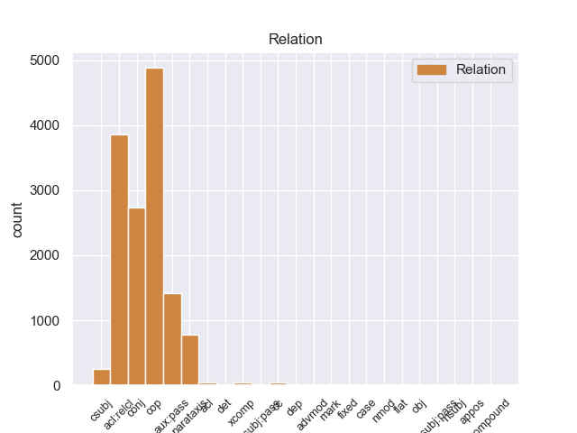
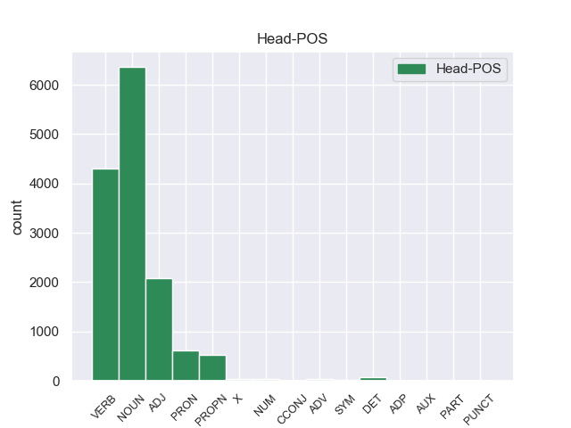
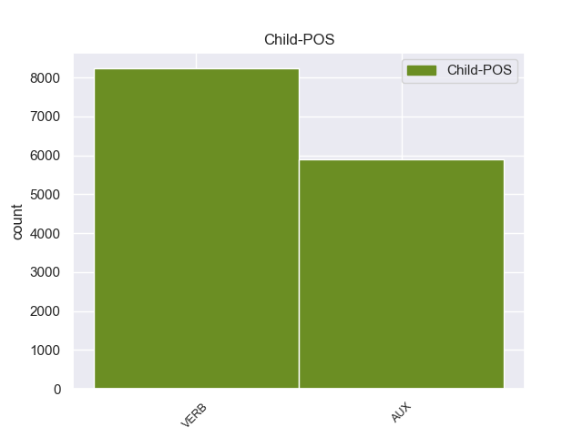

Distribution of features within this leaf



Morphosyntax Rules sorted by frequency.
- When the dependent token is the copula(cop) of the head token, and the head token is ADJ and the dependent token is AUX, the Tense needs to be Pres.
1 En _ _ _ _ 0 _ _ _
2 1991 _ _ _ _ 0 _ _ _
3 , _ _ _ _ 0 _ _ _
4 como _ _ _ _ 0 _ _ _
5 ya _ _ _ _ 0 _ _ _
6 está estar AUX _ Mood=Ind|Number=Sing|Person=3|Tense=Pres|VerbForm=Fin 7 cop _ _
7 indicado indicado ADJ _ Gender=Masc|Number=Sing|VerbForm=Part 0 _ _ _
8 en _ _ _ _ 0 _ _ _
9 el _ _ _ _ 0 _ _ _
10 párrafo _ _ _ _ 0 _ _ _
11 anterior _ _ _ _ 0 _ _ _
12 , _ _ _ _ 0 _ _ _
13 se _ _ _ _ 0 _ _ _
14 creó _ _ _ _ 0 _ _ _
15 un _ _ _ _ 0 _ _ _
16 equipo _ _ _ _ 0 _ _ _
17 ad _ _ _ _ 0 _ _ _
18 hoc _ _ _ _ 0 _ _ _
19 para _ _ _ _ 0 _ _ _
20 averiguar _ _ _ _ 0 _ _ _
21 como _ _ _ _ 0 _ _ _
22 se _ _ _ _ 0 _ _ _
23 podía _ _ _ _ 0 _ _ _
24 desarrollar _ _ _ _ 0 _ _ _
25 el _ _ _ _ 0 _ _ _
26 Dialogo _ _ _ _ 0 _ _ _
27 Social _ _ _ _ 0 _ _ _
28 , _ _ _ _ 0 _ _ _
29 este _ _ _ _ 0 _ _ _
30 equipo _ _ _ _ 0 _ _ _
31 estaba _ _ _ _ 0 _ _ _
32 formado _ _ _ _ 0 _ _ _
33 por _ _ _ _ 0 _ _ _
34 representantes _ _ _ _ 0 _ _ _
35 de _ _ _ _ 0 _ _ _
36 todas _ _ _ _ 0 _ _ _
37 las _ _ _ _ 0 _ _ _
38 organizaciones _ _ _ _ 0 _ _ _
39 relacionadas _ _ _ _ 0 _ _ _
40 con _ _ _ _ 0 _ _ _
41 CES _ _ _ _ 0 _ _ _
42 , _ _ _ _ 0 _ _ _
43 UNICE _ _ _ _ 0 _ _ _
44 y _ _ _ _ 0 _ _ _
45 CEEP _ _ _ _ 0 _ _ _
46 ; _ _ _ _ 0 _ _ _
1 Dos _ _ _ _ 0 _ _ _
2 de _ _ _ _ 0 _ _ _
3 los _ _ _ _ 0 _ _ _
4 puntos _ _ _ _ 0 _ _ _
5 de _ _ _ _ 0 _ _ _
6 Lagrange _ _ _ _ 0 _ _ _
7 ( _ _ _ _ 0 _ _ _
8 L4 _ _ _ _ 0 _ _ _
9 y _ _ _ _ 0 _ _ _
10 L5 _ _ _ _ 0 _ _ _
11 ) _ _ _ _ 0 _ _ _
12 , _ _ _ _ 0 _ _ _
13 situados _ _ _ _ 0 _ _ _
14 a _ _ _ _ 0 _ _ _
15 150 _ _ _ _ 0 _ _ _
16 millones _ _ _ _ 0 _ _ _
17 de _ _ _ _ 0 _ _ _
18 kilómetros _ _ _ _ 0 _ _ _
19 de _ _ _ _ 0 _ _ _
20 la _ _ _ _ 0 _ _ _
21 Tierra _ _ _ _ 0 _ _ _
22 , _ _ _ _ 0 _ _ _
23 son ser AUX _ Mood=Ind|Number=Plur|Person=3|Tense=Pres|VerbForm=Fin 25 aux:pass _ _
24 considerados _ _ _ _ 0 _ _ _
25 estables estable ADJ _ Number=Plur 0 _ _ _
26 y _ _ _ _ 0 _ _ _
27 por _ _ _ _ 0 _ _ _
28 tanto _ _ _ _ 0 _ _ _
29 son _ _ _ _ 0 _ _ _
30 zonas _ _ _ _ 0 _ _ _
31 con _ _ _ _ 0 _ _ _
32 potencial _ _ _ _ 0 _ _ _
33 para _ _ _ _ 0 _ _ _
34 permitir _ _ _ _ 0 _ _ _
35 la _ _ _ _ 0 _ _ _
36 acreción _ _ _ _ 0 _ _ _
37 planetaria _ _ _ _ 0 _ _ _
38 en _ _ _ _ 0 _ _ _
39 competición _ _ _ _ 0 _ _ _
40 con _ _ _ _ 0 _ _ _
41 la _ _ _ _ 0 _ _ _
42 Tierra _ _ _ _ 0 _ _ _
43 . _ _ _ _ 0 _ _ _
non-conforming Examples:
1 Una _ _ _ _ 0 _ _ _
2 vez _ _ _ _ 0 _ _ _
3 que _ _ _ _ 0 _ _ _
4 el _ _ _ _ 0 _ _ _
5 conquistador _ _ _ _ 0 _ _ _
6 reunía _ _ _ _ 0 _ _ _
7 suficiente _ _ _ _ 0 _ _ _
8 oro _ _ _ _ 0 _ _ _
9 , _ _ _ _ 0 _ _ _
10 era ser AUX _ Mood=Ind|Number=Sing|Person=3|Tense=Imp|VerbForm=Fin 11 cop _ _
11 frecuente frecuente ADJ _ Number=Sing 0 _ _ _
12 que _ _ _ _ 0 _ _ _
13 se _ _ _ _ 0 _ _ _
14 volviese _ _ _ _ 0 _ _ _
15 a _ _ _ _ 0 _ _ _
16 España _ _ _ _ 0 _ _ _
17 a _ _ _ _ 0 _ _ _
18 disfrutar _ _ _ _ 0 _ _ _
19 de _ _ _ _ 0 _ _ _
20 su _ _ _ _ 0 _ _ _
21 fortuna _ _ _ _ 0 _ _ _
22 . _ _ _ _ 0 _ _ _
1 Su _ _ _ _ 0 _ _ _
2 puesto _ _ _ _ 0 _ _ _
3 en _ _ _ _ 0 _ _ _
4 el _ _ _ _ 0 _ _ _
5 ejército _ _ _ _ 0 _ _ _
6 no _ _ _ _ 0 _ _ _
7 era ser AUX _ Mood=Ind|Number=Sing|Person=3|Tense=Imp|VerbForm=Fin 8 cop _ _
8 compatible compatible ADJ _ Number=Sing 0 _ _ _
9 con _ _ _ _ 0 _ _ _
10 la _ _ _ _ 0 _ _ _
11 conversión _ _ _ _ 0 _ _ _
12 a _ _ _ _ 0 _ _ _
13 el _ _ _ _ 0 _ _ _
14 cristianismo _ _ _ _ 0 _ _ _
15 , _ _ _ _ 0 _ _ _
16 ya _ _ _ _ 0 _ _ _
17 que _ _ _ _ 0 _ _ _
18 esto _ _ _ _ 0 _ _ _
19 significaba _ _ _ _ 0 _ _ _
20 un _ _ _ _ 0 _ _ _
21 abierto _ _ _ _ 0 _ _ _
22 desafío _ _ _ _ 0 _ _ _
23 a _ _ _ _ 0 _ _ _
24 la _ _ _ _ 0 _ _ _
25 autoridad _ _ _ _ 0 _ _ _
26 de _ _ _ _ 0 _ _ _
27 el _ _ _ _ 0 _ _ _
28 emperador _ _ _ _ 0 _ _ _
29 . _ _ _ _ 0 _ _ _
1 El _ _ _ _ 0 _ _ _
2 H8 _ _ _ _ 0 _ _ _
3 fue ser AUX _ Mood=Ind|Number=Sing|Person=3|Tense=Past|VerbForm=Fin 4 cop _ _
4 similar similar ADJ _ Number=Sing 0 _ _ _
5 a _ _ _ _ 0 _ _ _
6 los _ _ _ _ 0 _ _ _
7 equipos _ _ _ _ 0 _ _ _
8 de _ _ _ _ 0 _ _ _
9 bus _ _ _ _ 0 _ _ _
10 S _ _ _ _ 0 _ _ _
11 - _ _ _ _ 0 _ _ _
12 100 _ _ _ _ 0 _ _ _
13 de _ _ _ _ 0 _ _ _
14 la _ _ _ _ 0 _ _ _
15 época _ _ _ _ 0 _ _ _
16 , _ _ _ _ 0 _ _ _
17 y _ _ _ _ 0 _ _ _
18 como _ _ _ _ 0 _ _ _
19 otras _ _ _ _ 0 _ _ _
20 máquinas _ _ _ _ 0 _ _ _
21 utilizaba _ _ _ _ 0 _ _ _
22 el _ _ _ _ 0 _ _ _
23 sistema _ _ _ _ 0 _ _ _
24 operativo _ _ _ _ 0 _ _ _
25 CP _ _ _ _ 0 _ _ _
26 / _ _ _ _ 0 _ _ _
27 M _ _ _ _ 0 _ _ _
28 en _ _ _ _ 0 _ _ _
29 disquete _ _ _ _ 0 _ _ _
30 . _ _ _ _ 0 _ _ _
1 Ser _ _ _ _ 0 _ _ _
2 identificado _ _ _ _ 0 _ _ _
3 como _ _ _ _ 0 _ _ _
4 el _ _ _ _ 0 _ _ _
5 redactor _ _ _ _ 0 _ _ _
6 de _ _ _ _ 0 _ _ _
7 una _ _ _ _ 0 _ _ _
8 sátira _ _ _ _ 0 _ _ _
9 presentaba _ _ _ _ 0 _ _ _
10 grandes _ _ _ _ 0 _ _ _
11 riesgos _ _ _ _ 0 _ _ _
12 : _ _ _ _ 0 _ _ _
13 por _ _ _ _ 0 _ _ _
14 un _ _ _ _ 0 _ _ _
15 lado _ _ _ _ 0 _ _ _
16 , _ _ _ _ 0 _ _ _
17 las _ _ _ _ 0 _ _ _
18 leyes _ _ _ _ 0 _ _ _
19 sobre _ _ _ _ 0 _ _ _
20 difamación _ _ _ _ 0 _ _ _
21 tenían _ _ _ _ 0 _ _ _
22 una _ _ _ _ 0 _ _ _
23 interpretación _ _ _ _ 0 _ _ _
24 muy _ _ _ _ 0 _ _ _
25 amplia _ _ _ _ 0 _ _ _
26 y _ _ _ _ 0 _ _ _
27 era ser AUX _ Mood=Ind|Number=Sing|Person=3|Tense=Imp|VerbForm=Fin 28 cop _ _
28 difícil difícil ADJ _ Number=Sing 0 _ _ _
29 para _ _ _ _ 0 _ _ _
30 el _ _ _ _ 0 _ _ _
31 autor _ _ _ _ 0 _ _ _
32 evitar _ _ _ _ 0 _ _ _
33 las _ _ _ _ 0 _ _ _
34 actuaciones _ _ _ _ 0 _ _ _
35 judiciales _ _ _ _ 0 _ _ _
36 si _ _ _ _ 0 _ _ _
37 se _ _ _ _ 0 _ _ _
38 establecía _ _ _ _ 0 _ _ _
39 quien _ _ _ _ 0 _ _ _
40 era _ _ _ _ 0 _ _ _
41 el _ _ _ _ 0 _ _ _
42 autor _ _ _ _ 0 _ _ _
43 de _ _ _ _ 0 _ _ _
44 un _ _ _ _ 0 _ _ _
45 texto _ _ _ _ 0 _ _ _
46 que _ _ _ _ 0 _ _ _
47 parecía _ _ _ _ 0 _ _ _
48 criticar _ _ _ _ 0 _ _ _
49 a _ _ _ _ 0 _ _ _
50 un _ _ _ _ 0 _ _ _
51 miembro _ _ _ _ 0 _ _ _
52 de _ _ _ _ 0 _ _ _
53 la _ _ _ _ 0 _ _ _
54 nobleza _ _ _ _ 0 _ _ _
55 ; _ _ _ _ 0 _ _ _
1 En _ _ _ _ 0 _ _ _
2 el _ _ _ _ 0 _ _ _
3 área _ _ _ _ 0 _ _ _
4 dedicada _ _ _ _ 0 _ _ _
5 a _ _ _ _ 0 _ _ _
6 la _ _ _ _ 0 _ _ _
7 movilidad _ _ _ _ 0 _ _ _
8 de _ _ _ _ 0 _ _ _
9 el _ _ _ _ 0 _ _ _
10 futuro _ _ _ _ 0 _ _ _
11 también _ _ _ _ 0 _ _ _
12 estará estar AUX _ Mood=Ind|Number=Sing|Person=3|Tense=Fut|VerbForm=Fin 13 cop _ _
13 presente presente ADJ _ Number=Sing 0 _ _ _
14 -- _ _ _ _ 0 _ _ _
15 a _ _ _ _ 0 _ _ _
16 pesar _ _ _ _ 0 _ _ _
17 de _ _ _ _ 0 _ _ _
18 que _ _ _ _ 0 _ _ _
19 prácticamente _ _ _ _ 0 _ _ _
20 con _ _ _ _ 0 _ _ _
21 la _ _ _ _ 0 _ _ _
22 visión _ _ _ _ 0 _ _ _
23 de _ _ _ _ 0 _ _ _
24 " _ _ _ _ 0 _ _ _
25 realidad _ _ _ _ 0 _ _ _
26 aumentada _ _ _ _ 0 _ _ _
27 " _ _ _ _ 0 _ _ _
28 -- _ _ _ _ 0 _ _ _
29 el _ _ _ _ 0 _ _ _
30 elemento _ _ _ _ 0 _ _ _
31 Lamborghini _ _ _ _ 0 _ _ _
32 Sexto _ _ _ _ 0 _ _ _
33 , _ _ _ _ 0 _ _ _
34 el _ _ _ _ 0 _ _ _
35 coche _ _ _ _ 0 _ _ _
36 concepto _ _ _ _ 0 _ _ _
37 construido _ _ _ _ 0 _ _ _
38 enteramente _ _ _ _ 0 _ _ _
39 de _ _ _ _ 0 _ _ _
40 carbono _ _ _ _ 0 _ _ _
41 , _ _ _ _ 0 _ _ _
42 el _ _ _ _ 0 _ _ _
43 resultado _ _ _ _ 0 _ _ _
44 de _ _ _ _ 0 _ _ _
45 la _ _ _ _ 0 _ _ _
46 investigación _ _ _ _ 0 _ _ _
47 de _ _ _ _ 0 _ _ _
48 Automobili _ _ _ _ 0 _ _ _
49 Lamborghini _ _ _ _ 0 _ _ _
50 en _ _ _ _ 0 _ _ _
51 el _ _ _ _ 0 _ _ _
52 uso _ _ _ _ 0 _ _ _
53 de _ _ _ _ 0 _ _ _
54 materiales _ _ _ _ 0 _ _ _
55 compuestos _ _ _ _ 0 _ _ _
56 . _ _ _ _ 0 _ _ _